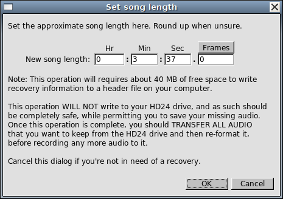

The most frequent cause of data loss on the HD24 recorder is a power failure while recording a live performance. This page outlines the "simplified" procedure for recovering audio lost due to power outages.
Do not panic. After the power loss, do not record anything on the drive, as it will overwrite the take being recorded before the power loss. Chances of recovery are generally better if the drive was freshly formatted before the recording (a quickformat is just as effective in this as a long format) because it helps keep the recording unfragmented/in one piece.
If you haven't yet, download your copy of HD24tools on the download page. Then, start up HD24connect with the crashed drive connected to your computer. Note: Mac users may need to start HD24connect by clicking the starthd24connect applescript. Under normal circumstances, the drive should be automatically detected. In most cases, the last song that was being recorded was the live performance; in that case, that last song should automatically be selected.
Should you be unable to find the crashed drive, read the instructions on determining the HD24 device name.
Before performing a recovery, you will need to know the approximate length of the song when the power failure occurred. When unsure, round up.

Once the correct project and song are selected, you can open the live recovery dialog, which can be found under menu option File->Recovery->Recover song from power failure. After entering the song length, HD24connect will attempt to guess where on the drive that song would have ended up. This guess is then used to create a recovery file on the drive of your computer. This recovery file is subsequently used instead of the inconsistent information on the HD24 drive to allow you to read the drive as if no power failure occurred.
The simplified recovery procedure is more limited than the general recovery procedure, as it requires that most of the HD24 drive is still in a consistent state. When the simplified procedure does not work, try the general recovery procedure.
As is the case with any read-only recovery procedure, this procedure does not actually recover your drive; it merely allows you to read data from it.